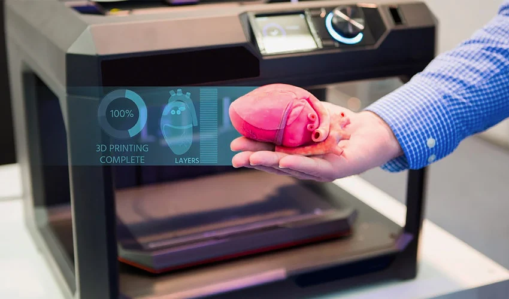
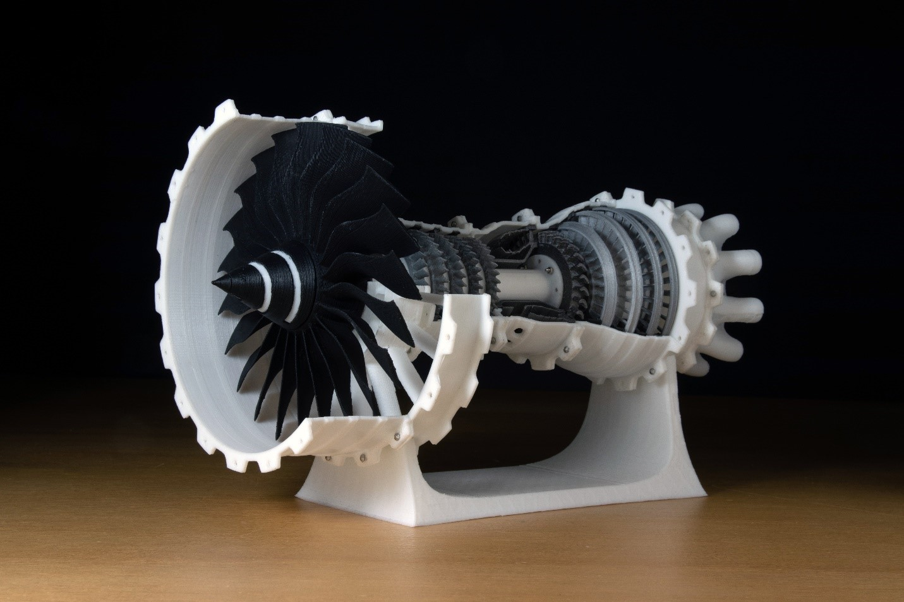
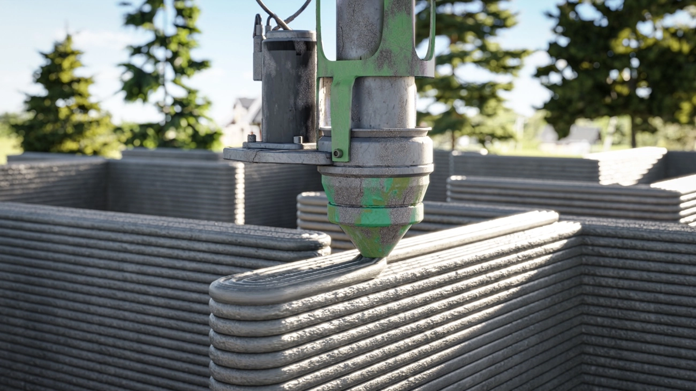

Medicina y salud
-
Prótesis personalizadas: Se crean prótesis a medida para pacientes, adaptadas a sus
necesidades físicas.
-
Implantes y dispositivos médicos: Por ejemplo, huesos y válvulas cardíacas impresas
en 3D.
-
Modelos anatómicos: Para la planificación de cirugías o educación médica, se imprimen
réplicas de órganos o partes del cuerpo.

Aeronáutica y automoción
-
Prototipos de piezas: Las empresas utilizan impresión 3D para hacer pruebas y validar
diseños antes de la producción final.
-
Piezas finales ligeras: Se fabrican componentes ligeros y resistentes, especialmente
útiles en aviones y autos de alto rendimiento.

Arquitectura y construcción
-
Modelos arquitectónicos: Impresión de maquetas a escala para visualizar proyectos antes
de la construcción.
-
Construcción de viviendas: Casas completas pueden ser impresas en 3D usando concreto u
otros materiales innovadores.

Entretenimiento
-
Efectos especiales y utilería: La industria cinematográfica usa la impresión 3D para crear
accesorios, trajes y escenografías detalladas.
-
Figuras de acción y coleccionables: Se fabrican modelos detallados de personajes para
coleccionistas y fanáticos.